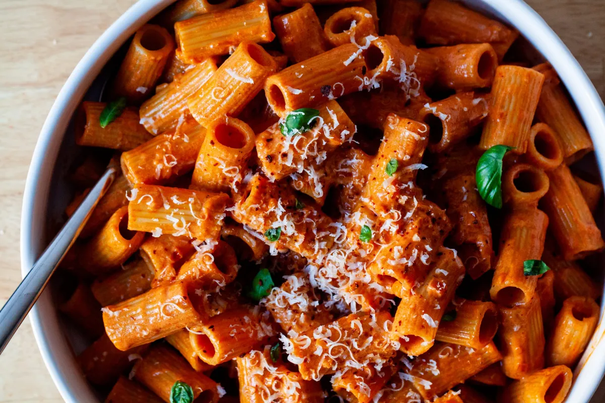

Rigatoni Alla vodka is a creamy pink sauce pasta that’s incredibly easy to make. Our recipe includes white wine in addition to the vodka for extra flavor, tomatoes, onion, garlic, and a touch of cream. It’s finished with Pecorino Romano and hand-torn basil and can be ready in about 30 minutes!
If you ever need evidence that I do not shy away from embarrassing myself here, look no further than one of the earliest posts on this site, where I tell the story of inviting a guy I’d recently begun dating over for dinner. I’d watched Rachael Ray’s 30-Minute Meals that morning, equally hungered by her making one of my favorite pastas, penne alla vodka, and horrified by the fact that she renamed it the “You Won’t Be Single For Long Vodka Cream Pasta.” I decided to make it, you know, tongue-in-cheek, sarcastically, sure Deb, except it “worked” — we are 15 years married (although everyone agrees the last year counts as two) which works out to about 17 years of repeating this awkwardness as part of our “how it started in the kitchen” story.
But when I look back at that recipe, do you know — after the name — what makes me cringe the most? Rachael Ray told me to put chicken broth in my vodka sauce! I shudder for me, and you. In the years since, she’s moved forward and so have I. I now know that well-seasoned pasta water is the only “broth” your sauce needs.
What does the vodka do? Depending on who you ask, the vodka serves to improve the consistency of the sauce and/or heightens the flavor and fragrance, but others argue it does nothing and was just the result of aggressive marketing on the part of vodka importers. My take: It’s mostly Tradition, but you can also make it show up more by not cooking it off.
Can I skip the vodka? Yes.
Do I need to cook the vodka off? Not at all. Vodka is traditionally added later in the dish, so the flavor stays. I’ve got little kids, so I cook it off earlier. You can skip cooking it off or add it after the tomato paste if you’d like it to be more present.
This recipe was initally published on smittenkitchen.com